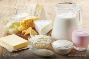

Приготовление сыра – один из самых лучших методов консервирования молока. Сыр готовится из пастеризованного молока. В процессе созревания сыра белок становится растворимым и поэтому почти полностью (на 98,5 %) усваивается организмом. Эта особенность делает сыр одним из самых полезных, ценных продуктов, который является основным поставщиком кальция. Ему свойственно противовоспалительное действие. Сыр богат фосфором, который принимает участие во всех сферах жизнедеятельности организма, в обмене веществ и функции нервной и мозговой ткани, мышц, печени, почек. Он входит в состав носителей наследственности.
Следует отметить – тертый сыр усваивается легче, чем нарезанный ломтиками. Рекомендуется подавать сыр на стол, выдержав его 2–3 часа в условиях комнатной температуры, чтобы полностью проявился его аромат.
Интересно, что эффективность воздействия сыров на наш организм строго зависит от времени суток. Рано утром, до 9–10 часов, сыр для нас, образно говоря, – «золото». Затем ценность его падает. После 10 и до 12 часов – это уже «серебро», с 12 до 16 часов – «бронза».
Хранение сыраСыр хранят только целым куском, завернув в чистую влажную белую хлопчатобумажную ткань, при температуре 10–15 °C, отдельно от других продуктов. Ткань, в которую завернут сыр, следует смачивать холодной водой и промывать в свежей воде не реже 1 раза в день.
Сыр сохранит долго свою свежесть, если поместить его в закрытую посуду, положив туда пару кусочков сахара.
Плавленые сыры, завернутые в фольгу, лучше, чем другие, сохраняются в домашних условиях, при t ниже 10 °C они остаются в хорошем состоянии до двух месяцев.
Брынзу можно хранить продолжительное время в рассоле (около 16 % соли), если банку, в которой она находится, покрыть белой тканью, намоченной в холодной воде и хорошо отжатой.
Чтобы устранить посторонний запах брынзы, нужно острогать ее поверхность, вытереть тканью, намоченной в уксусе, хорошо вымыть банку, в которой находилась брынза, вновь уложить ее и залить свежим рассолом.
Приготовление сыра в домашних условияхДомашний сыр лучше всего приготовить из только что отваренного обычным способом творога.
Первый способ. Творог откидываем на решето, выстланное чистой тканью, чтобы стекла сыворотка. Затем перекладываем в посуду, посыпаем мелкой солью (1 ст. ложка соли на 1 кг творога) и растираем до получения мягкой массы или 2–3 раза пропускаем через мясорубку.
Для формирования сыра набиваем 500–800 г массы в полотняные (холщовые) мешочки конической формы, завязываем их и ставим конусом вверх, прикрыв дощечками с грузом. Сыр прессуем 5–10 часов, при этом следим, чтобы он не был пересушен.
Для выдерживания его обсушиваем на сквозняке, а затем выносим в погреб и держим 1–4 недель, время от времени поворачивая. При появлении плесени сыр обмываем подсоленной водой и обсушиваем на сквозняке.
Второй способ. Откинутый свежеотваренный творог пропускаем вместе с солью два раза через мясорубку и оставляем на 5 дней в сухом помещении.
Пожелтевший творог перемешиваем, перекладываем в смазанную маслом кастрюлю и варим на слабом огне, все время помешивая, пока не образуется жидкая однородная (без комков) масса. Потом ее разливаем в маленькие кастрюльки (или другую посуду). После того как она остынет и затвердеет, сыр готов к употреблению.
Третий способ. Для приготовления 1 кг сыра берем 8,5 стаканов обезжиренного творога, 2,5 столовые ложки сливочного или топленого масла, 2 чайные ложки питьевой соды и 3 чайные ложки мелкой соли.
Откинутый творог пропускаем через мясорубку и закладываем в посуду. Половину количества соды равномерно рассыпаем по поверхности и начинаем медленно подогревать, непрерывно помешивая деревянной лопаткой. Если в процессе нагревания на поверхности творога появится сыворотка, посуду закрываем крышкой и снимаем с огня на 10–15 минут, после чего отстоявшуюся сыворотку удаляем. Если сыворотку отделить от творога не удается, к нему добавляем остальное количество соды и смесь продолжаем нагревать. После того как сырная масса хорошо расплавится и несколько загустеет, добавляем растопленное масло. Соль (а также тмин, анис, укроп) кладем за 15–20 минут до конца варки. Готовая масса должна представлять собой однородную тянущуюся массу.
После варки сырную массу немедленно переливаем в чистую посуду, смазанную маслом, и выносим в холодное помещение. Перед тем как вынуть охлажденный сыр из посуды, последнюю погружаем на несколько секунд в горячую воду.
Четвертый способ. Берем 1 л молока, 1 кг творога, все это варим, помешивая, а затем отцеживаем через марлю. Прибавляем 200 г сливочного масла, 3 яйца, в теплую массу кладем 1 столовую ложку соли, 1/2 чайной ложки соды и варим 15–20 минут. Когда все остынет, отжимаем и набиваем форму.
Переметный сыр (старинный рецепт)Это название произошло от переметных сум (мешков), которые были обязательной принадлежностью экипировки казака, отправляющегося в поход.
Переметный сыр можно отнести к кисло-молочным домашним сырам. Варили его из смеси цельного и снятого (или со сладкой пахтой), в соотношении 3:1.
На ведро (10 л) молока клали 3–4 ст. ложки соли и нагревали при помешивании до 92–98 °C.
2–3 литра сметаны хорошего качества смешивали с 10 куриными яйцами. Скорлупу тщательно мыли, ошпаривали кипятком и просушивали. Затем измельчали в ступке до порошкообразного состояния, растворяли в уксусе, смешивали со сметаной и яйцами и выливали в горячее молоко при помешивании. Как только начинали появляться хлопья, его снимали с огня и оставляли для осветления сыворотки на 5–7 минут. Осторожно перемешивали и образовавшийся белок отделяли от сыворотки. Сыворотку с оставшимися частицами белка процеживали через полотняный мешок, поставив под него емкость.
Затем мешок подвешивали для стекания сыворотки. Когда масса остывала до 30–40 °C, мешок закручивали и клали под гнет в 3 кг. Через час сыр вынимали из мешка, не нарушая целостность головки, и, завернув в марлю или бязь, клали в дуршлаг. Прижимали гнетом в 5 кг и выдерживали 2 часа в прохладном месте (10–15 °C) до прекращения выделения сыворотки. После первого часа сыр вынимали, прополаскивали ткань в теплой воде и снова заворачивали сыр, положив его на другую сторону.
Отпрессованный сыр освобождали от салфетки и при необходимости досаливали, натерев поверхность солью и оставив в форме на сутки. После этого сыр был готов.
Чтобы увеличить продолжительность хранения этого сыра, его проваривали в кипящем молоке 3–5 минут или коптили холодным копчением. Перед копчением сыр подсушивали на воздухе и перевязывали пеньковой веревкой в 2–3 слоя так, чтобы перевязь была сетчатой. Сверху делали крепкую петлю для подвешивания.
Для получения коптильного дыма использовали дрова грушевых, яблоневых, абрикосовых и других плодовых деревьев. Годились также дрова из ольхи, ясеня, клена, липы. Березу и хвойные деревья не применяли, так как они придавали сыру черный вид, горьковатый привкус и запах.
Температура дыма достигала 18–20 °C. Продолжительность от 1 до 3 дней, в зависимости от величины головок, жирности сыра, температуры дыма и его густоты.
Копченые сыры протирали чистой тряпкой и заворачивали в бумагу. В некоторых хозяйствах сыр натирали молотым красным слабожгучим перцем. Для этого жирный сыр выносили на солнце и оставляли для вытапливания на его поверхности капель жира. Если сыр был маложирный, то поверхность смазывали топленым маслом, затем тонким слоем перца, слегка растирали, заворачивали в бумагу или холщовую салфетку и хранили до употребления.
Такой сыр обладал острым пикантным вкусом, хорошо хранился и по мере выдержки делался все вкуснее.
Сцеженную сыворотку использовали для приготовления хлеба, печенья, теста для пирогов, блинов и др. изделий.
Переметный сыр, если его не коптить, можно приготовить и в городской квартире, купив в магазине 3 литра молока, 3 яйца и 1 литр сметаны.
Картофельный сырСыр этот, очень вкусный и легко сохраняемый. В Тюрингии и Саксонии его готовят следующим образом: берут самый лучший картофель, варят его в кипятке, дают охладиться, очищают и толкут, пока он не превратится в однородное тесто; на 5 частей этого теста берут одну часть кислого молока, тщательно смешивают и хранят смесь в плотно закрытом сосуде 3–4 дня, затем снова месят это тесто, делают из него небольшие колобки и сушат в тени, потом кладут их рядами в большой глиняный горшок и оставляют на 15 дней. Чем старше этот сыр, тем он лучше.